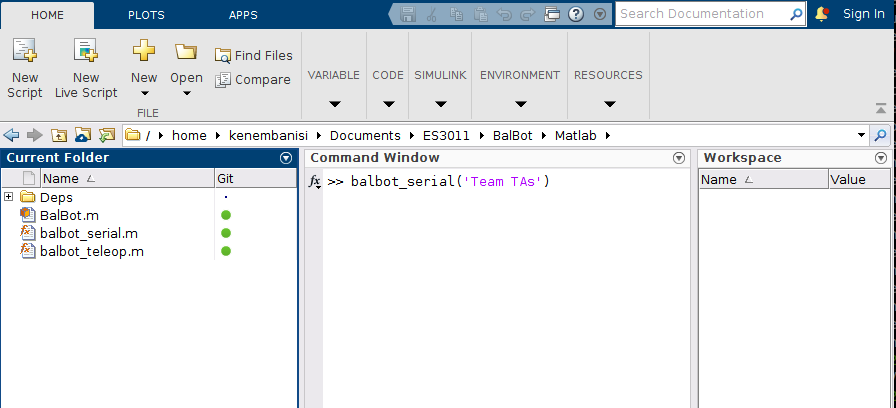
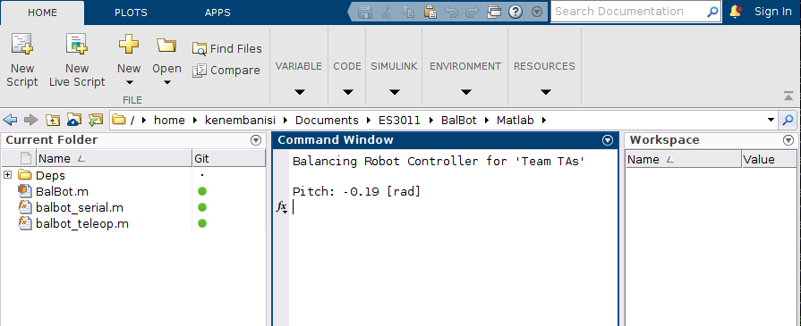

Lab 3: Laplace Transforms & Mathematical Modeling II¶
Introduction¶
Welcome to the third session of the ES3011 experimental labs. In this lab, we focus on laplace transformation. The central question is "How do we simplify our system modeling and analysis by converting our equations from time-domain (differential equations) to s-domain (algebraic equations)?"
We will cover three sections in this lab:
-
Laplace and inverse laplace transforms for basic dynamical systems
-
Laplace transforms for the BalBot (self-balancing robot)
-
Testing Balbot IMU Calibration
Learning Outcomes¶
Our goal at the end of this labs is that you should be able to:
- Understand how to perform laplace and inverse laplace transformation on basic dynamic systems
- Understand how to perform laplace for real robotic systems (the BalBot)
1. Laplace and Inverse Laplace Transforms for Basic Dynamical Systems¶
In this section, you will find the frequency-domain representations of basic dynamical systems using the Laplace transformation. This representation would be instrumental in performing transfer function analysis in future lab sessions.
Instructions:¶
In this lab instruction sheet,
- Complete the Laplace and Inverse Laplace Transform Problems section
- Complete problems I (Mass-spring-damper) and IV (Motor position)
2. Laplace Transforms for the BalBot (Self-balancing Robot)¶
In this section, we will build up on the differential equations derived in Lab 2. Given the differential equations, we will apply laplace transforms to convert the BalBot system model from time-domain to s-domain.
Instructions:¶
In this lab instruction sheet,
- You should have three (3) equations from Q5 which describe the full system dynamic model.
- You are required to derive the laplace transform of those equations by hand.
3. Testing Balbot IMU Calibration¶
In Lab 1, we completed the IMU calibration process to ensure the robot get accurate feedback from the IMU sensor about its orientation. In this section, we will now test the calibration process by reading off the robot's pitch values on MATLAB using serial comm.
Instructions:¶
1. Update your Balbot software:
- To update the Balbot software on your local PC, please run the
git pullcommand in the directory where you cloned the WPI-ES3011 repository
2. Build and upload code to the Balbot:
- First, connect the robot to your PC via USB.
- Start up VS Code and, following the procedure in Lab 1, build and upload the code to the robot.
3. Test the IMU calibration on MATLAB:
- Next step is to start up MATLAB.
- Make sure you navigate to directory where you have saved the WPI-ES3011 Lab software
- Run the following command in your MATLAB command window (instead of
add your actual team ID, e.g. 'Team 1')
>> balbot_serial(<team-ID>)
- Make sure you observe that the pitch value changes correctly as you manually move the robot about the X-axis.
- Take screen shots of your MATLAB output (similar to Fig. 2) when the robot is in three positions:
- Upright position (pitch = ~0 rad)
- Leaning backward (as far as you can go)
- Leaning forward (as far as you can go)
Fig 1: 
Fig 2: 
What to Submit:¶
Prepare a report which contains the following:
- Introduction: a few sentences to introduce the topic of the lab
- Section 1: Laplace and Inverse Laplace Transforms for Basic Dynamical Systems
- Present your solution to each of the questions in that section.
- Section 2: Laplace Transforms for the BalBot (Self-balancing Robot)
- Present your solution.
- Section 3: Test the IMU calibration on MATLAB
- Show the three MATLAB screen shots as described above.
- Conclusion: a few sentences concluding the report explaining the goals, what you learned, and any other conclusions.
Note
If you completed the IMU calibration test in Lab 2, kindly copy and paste your solution in this lab report as the grades for this section would count in Lab 3 alone and not in Lab 2.